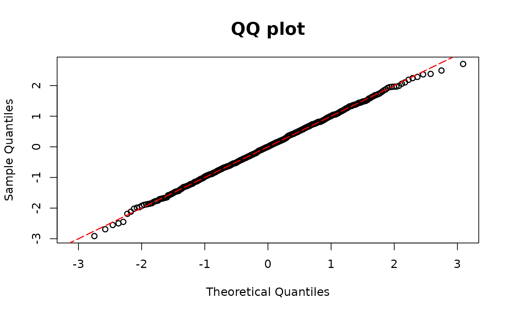

Residuals for regression models with zero-inflated outcomes
Source:R/zero_resid.R
resid_zeroinfl.RdCaluates the DPIT residuals for a regression model with zero-inflated discrete outcome.
A zero-inflated model from pscl is used in this function.
Arguments
- model
Model object, which is the output of
pscl::zeroinfl.- plot
A logical value indicating whether or not to return QQ-plot.
- scale
You can choose the scale of the residuals among
normalanduniformscales. The default scale isnormal.
References
Yang, Lu. "Double Probability Integral Transform Residuals for Regression Models with Discrete Outcomes." arXiv preprint arXiv:2308.15596 (2023).
Examples
## Zero-Inflated Poisson
library(pscl)
n <- 500
set.seed(1234)
# Covariates
x1 <- rnorm(n)
x2 <- rbinom(n, 1, 0.7)
# Coefficients
beta0 <- -2
beta1 <- 2
beta2 <- 1
beta00 <- -2
beta10 <- 2
# Mean of Poisson part
lambda1 <- exp(beta0 + beta1 * x1 + beta2 * x2)
# Excess zero probability
p0 <- 1 / (1 + exp(-(beta00 + beta10 * x1)))
## simulate outcomes
y0 <- rbinom(n, size = 1, prob = 1 - p0)
y1 <- rpois(n, lambda1)
y <- ifelse(y0 == 0, 0, y1)
## True model
modelzero1 <- zeroinfl(y ~ x1 + x2 | x1, dist = "poisson", link = "logit")
resid.zero1 <- resid_zeroinfl(modelzero1, plot = TRUE, scale = "uniform")

## Zero inflation
modelzero2 <- glm(y ~ x1 + x2, family = poisson(link = "log"))
resid.zero2 <- resid_disc(modelzero2, plot = TRUE, scale = "normal")